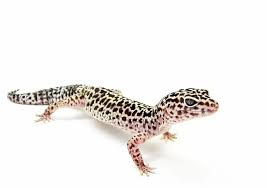

<!DOCTYPE html>
<html lang="pl-PL" 
	<meta charset="iso-8859-2"/>
	<meta name="viewport" content=width=device-device-width, initial-scale=1.0"/>
<head>
<title> strona www </title>
<style>

img.img1 {
	width: 100%;
}

div.img1 {
	background-color: lightblue;
	width: 24%;
	text-align: center;
	background: linear-gradient(#ddccdd 5%, #ffeeff);
	margin: 15px;
	float: left;
}

div.img1:hover {
	transform: scale(1.5);
}

</style>
</head>
<body style="background-color:lightgray;">
	<div style="background-color:gray;">
		<h1> <center> PSI - Karol Noras </center> </h1>
	</div>
	
	<div style="float:left; width:15%; height:750px; background-color:lightpink;">
		<h3> Html </h3>
			<a href="index.html"> STRONA GŁÓWNA </a> <br />
			<a href="kolory.html"> Kolory </a> <br />
			<a href="nauczyciele.html"> nauczyciele </a> <br />
			<a href="zdjecia.html"> zdjęcia</a> <br />
			<a href="tabele.html"> tabele</a> <br />
			<a href="tabela-Noras.html"> tabele na ocene</a> <br />
			<a href="listy.html"> Listy</a> <br />
			<a href="Noras_lista.html"> Listy na ocene </a> <br />
			<a href="mapy.html"> mapa odsyłaczy</a> <br />
			<a href="formularz.html">formularz</a> <br />
			<a href="Noras_formularz.html">formularz na ocene</a> <br />
			<a href="Multimedia.html">Multimedia</a> <br />
			<a href="kanvas.html">Canvas</a> <br />
		<h3>CSS</h3>
			<a href="wlasciwosci_css.html">Właściwośći css</a> <br />
			<a href="identyfikator.html">identyfikator</a> <br />
			<a href="Noras_css.html">Css na ocene</a> <br />
			<a href="tabele_css.html">Tabele css</a> <br />
			<a href="galeria_css.html">Galeria css</a> <br />
			<a href="ikony_css.html">Ikony css</a> <br />
			<a href="float_css.html">float css</a> <br />
			<a href="float2_css.html">float2 logo css</a> <br />
			<a href="menu_css.html">menu poziome i pionowe</a> <br />
			<a href="responsywnu_uklad_css.html">responsywny układ css</a> <br />
		<h3>SELEKTORY</h3>
			<a href="selektory1_css.html">selektory elementów css</a> <br />
			<a href="selektory2_css.html">selektory atrybutów css</a> <br />
		<h3>Dokument</h3>
			<a href="doc/grupa2c.docx" target="new">Listy grupa II w 2c</a> <br />
			<a href="doc/wydatki2c.xlsx" target="new">Wydatki grupa II w 2c</a> <br />
		<h3>Linki</h3>
			<a href="https://www.google.pl/?hl=pl" target="new"></a> <br />
			<a href="https://tsi-pai.cba.pl" target="new"></a> <br />
	</div>
	<div style="float:right; width:85%; background-color:lightgray; border-style:solid none solid none; border-color:grey;">
	
	
    Czekolada pitna - ziarna kakaowca są poddawane fermentacji, suszone, a następnie oczyszczane i prażone. 
	Następnie miażdży się ich skorupki i odsiewa je oraz usuwa zarodki. Z pokruszonych ziaren wydobywa się tłuszcz 
	za pomocą wyciskania, wyżymania lub rozpuszczalnika. Pozostaje sucha substancja, tzw. makuchy. 
	Zostają one rozdrobnione i wysuszone w temperaturze 20 stopni Celcjusza.  
	Następnie przerabia się je na proszek i przesiewa. Otrzymany ciemny,  
	aromatyczny proszek mieszany jest z cukrem i otrzymuje się czekoladę w proszku.<br/>
	Czekolada twarda - pokruszoną śrutę kakaową miele się w wysokiej temperaturze. 
	Powstaje masa zwana likierem czekoladowym. Miesza się ją i rozgniata, aż powstanie miałka i tłusta substancja, 
	puszysta, o aksamitnej gładkości. Poddawana jest ona konszowaniu - mieszaniu i rozcieraniu na sucho. 
	Dzięki temu staje się bardziej plastyczna, zmniejsza się jej wilgotność i znikają resztki kwasowości. 
	Pod koniec procesu konszowania dodaje się masło kakaowe i ewentualnie lecytynę. 
	Cały czas masa jest łagodnie podgrzewana do odpowiedniej temperatury (80-85 stopni dla czekolady gorzkiej, 
	55-60 stopni dla czekolady mlecznej). Następnie czekoladę się powoli schładza, 
	aby tłuszcz kakaowy jednolicie się skrystalizował. Odpowiednio schłodzona (ale płynna)
	masa jest wlewana do form. W tunelu chłodniczym, w temperaturze około 6-7 stopni czekolada stygnie i krzepnie, 
	kurcząc się w formach. Ostatnim etapem produkcji jest wybicie tabliczek z form i zapakowanie. <br/> 
	Czekolada pitna - ziarna kakaowca są poddawane fermentacji, suszone, a następnie oczyszczane i prażone. 
	Następnie miażdży się ich skorupki i odsiewa je oraz usuwa zarodki. Z pokruszonych ziaren wydobywa się tłuszcz 
	za pomocą wyciskania, wyżymania lub rozpuszczalnika. Pozostaje sucha substancja, tzw. makuchy. 
	Zostają one rozdrobnione i wysuszone w temperaturze 20 stopni Celcjusza. 
	Następnie przerabia się je na proszek i przesiewa. Otrzymany ciemny, 
	aromatyczny proszek mieszany jest z cukrem i otrzymuje się czekoladę w proszku.<br/> 
    Czekolada twarda - pokruszoną śrutę kakaową miele się w wysokiej temperaturze. 
	Powstaje masa zwana likierem czekoladowym. Miesza się ją i rozgniata, aż powstanie miałka i tłusta substancja, 
	puszysta, o aksamitnej gładkości. Poddawana jest ona konszowaniu - mieszaniu i rozcieraniu na sucho. 
	Dzięki temu staje się bardziej plastyczna, zmniejsza się jej wilgotność i znikają resztki kwasowości. 
	Pod koniec procesu konszowania dodaje się masło kakaowe i ewentualnie lecytynę.  
	Cały czas masa jest łagodnie podgrzewana do odpowiedniej temperatury (80-85 stopni dla czekolady gorzkiej, 
	55-60 stopni dla czekolady mlecznej). Następnie czekoladę się powoli schładza, 
	aby tłuszcz kakaowy jednolicie się skrystalizował. Odpowiednio schłodzona (ale płynna)
	masa jest wlewana do form. W tunelu chłodniczym, w temperaturze około 6-7 stopni czekolada stygnie i krzepnie, 
	kurcząc się w formach. Ostatnim etapem produkcji jest wybicie tabliczek z form i zapakowanie. <br/>
	
	
	
	
	<hr />
	
	
	
	
	
	
	<hr />
	<label name="video1"> - VIDEO - </label><br />
	<video name="video1" src="video\video1.mp4" height="400px" width="600px" controls preload loop>
		<source src="video\video1" type="video/mp4"/>
	</video>
	
	<br /><br /><br />
	
	<label name="audio1"> - AUDIO - </label><br />
	<audio name="audio1" src="audio\audio1.wav" height="100px" width="150px" controls preload>
		<source src="audio\audio1.wav" type="audio/wav"/>
	</audio

		
		
	
	</div>
	<div style="background-color:yellow; clear:both;"><center> &copy; K.N, October 2024
	</center> </div>
</body>
</html>
